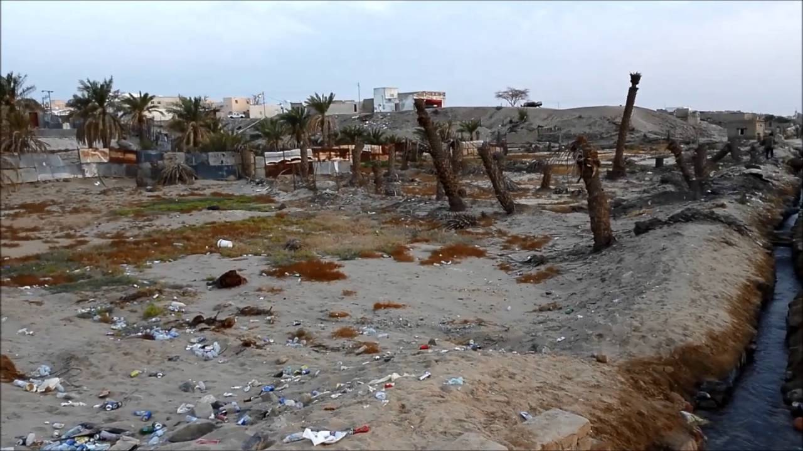

Welcome to your in Yanbu tourism
Hello your in Yanbu tourism
(yanbae alnnakhl )

City of ancient history is due to more than two thousand years. Consists of a group of well-known in antiquity villages as one of the commercial cities saluting located in the village of Al Suwaiq were larger villages aspiring Forum market Monday for convoys and commercial pilgrims and followed by the neighbor Port has been inhabited by the children of Abraham from the supervisor and the tribe Qayedi from Bani Salim of war, and they have three villages do not continue to live by in this day and this port is very old and in one of the historical periods chartered by Portugal for the children of Abraham to dock ships, as well as it was known, until recently, the palm plantations and eyes underway and said that with more than a hundred ongoing eye and was nicknamed the Valley bliss before they dry eyes, and keep track of Yanbu farming villages palm group